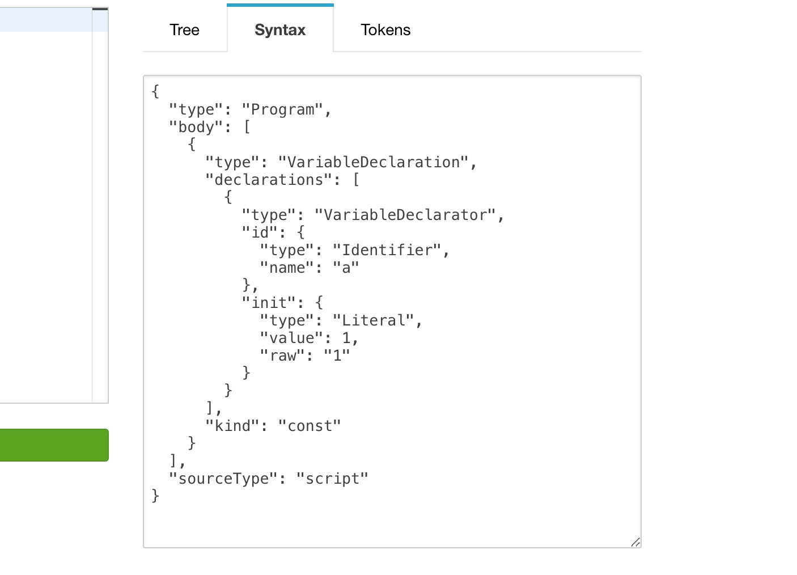
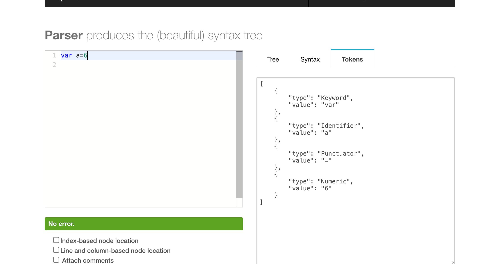
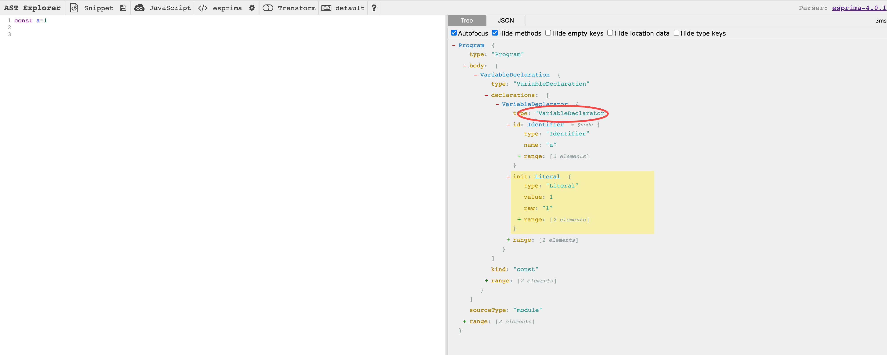
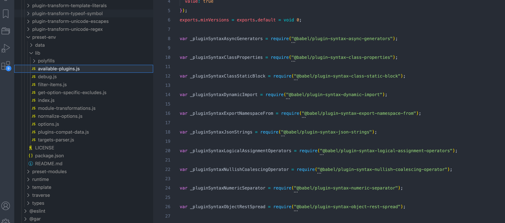

AST抽象语法树
什么是抽象语法树?
- 抽象语法树 (Abstract Syntax Tree)，简称 AST，它是源代码语法结构的一种抽象表示。它是以树状的形式表现各种计算机编程语言(比如java、c、javascript等)的语法结构。
- 我们可以通过诸如网站astexplorer很清晰的看到各种语言的 AST 结构。
estree规范
- 既然不同编程语言都有对应的AST,那么相对应的肯定需要规范来统一。estree规范就是成为操纵JavaScript源代码的工具的通用语言。它定义了JavaScript中所有涉及到的语法的表达形式
- estree这个项目的初衷通过社区的力量，保证和es规范的一致性，通过自定义的语法结构来表述JavaScript的AST，后来随着知名度越来越高，多位知名工程师的参与，使得变成了事实意义上的规范，目前这个库是Mozilla和社区一起维护的。
js解析器
正因为有了estree规范,社区产生了各种js解析器(用于将js代码转换成符合estree规范的AST结构).
举个🌰 const a=1
通过Esprima转化成ast结构就是

2.acorn,和Esprima类似,输出的ast都是符合EsTree规范的，目前webpack、babel的AST解析器用的就是acorn
3.@babel/parser,babel官方的解析器，最初fork于acorn，后来完全走向了自己的道路(基于 ESTree 并修改过的 AST,但是符合estree规范的)，babel就是通过@babel/parser将js代码转换为 AST 抽象语法树的,其输出的ast都是符合EsTree规范的
4.uglify-js,用于混淆和压缩代码，因为一些原因，uglify-js自己实现了一套AST规范,其使用SpiderMonkey解释器,所生成的ast也可以叫做SpiderMonkey 树,也正是因为它的AST是自创的，不是标准的ESTree，es6以后新语法的AST，都不支持，所以没有办法压缩最新的es6的代码.如果需要压缩，可以用类似babel这样的工具先转换成ES5。注意:由于uglify-js其内部所使用的spiderMonkey解释器效率慢,官方支持 -p --acorn选项来使用Acorn解释所有代码。如果你传入这个选项，UglifyJS会require("acorn"),Acorn确实非常快（650k代码原来要380ms，现在只需250ms），但转换Acorn产生的SpiderMonkey树会额外花费150ms。所以总共比UglifyJS自己的解释器还要多花一点时间。
js解析器如何生存AST
词法分析–>语法分析–>AST树
我们来解释下:
词法分析:即分词
1.一个一个字母的来读取字符, 然后与定义好的 JavaScript 关键字符做比较，生成对应的Token;
例如 var 这三个字符，它只能作为一个整体，语义上不能再被分解，因此它是一个 Token。
2.词法分析器里，每个关键字是一个 Token(单元) ，每个标识符是一个 Token，每个操作符是一个 Token，每个标点符号也都是一个 Token。除此之外，还会过滤掉源程序中的注释和空白字符、换行符、空格、制表符等。
3.最终，整个代码将被分割进一个tokens列表（或者说一维数组）。
我们可以通过esprima可视化网站快速查看token形态

语法分析:在上面词法分析出来的 Token 转化成有语法含义的抽象语法树结构。同时，验证语法，语法如果有错的话，抛出语法错误。
上面我们介绍了各种js解析器以及解析器如何生成AST,下面我们介绍下AST的应用
AST应用
- 编辑器的错误提示、代码格式化、代码高亮、代码自动补全；
- elint、prettier 对代码错误或风格的检查；
- babel的es6转es5
- vue模板编译、react模板编译
- 组件库按需引入如babel-plugin-import
- TypeScript、JSX等转化为原生Javascript等等
下面我们以babel的es转换举例来加深对AST的理解:
- @babel/parser:将js代码转换成AST树
- @babel/traverse:对AST进行递归遍历(需要配合visitor操作ast树,下面会讲)
- @babel/generator:AST树转换成新的js代码
下面我们实操下:
目的:将const a=1; 转换成let a=1;
直接看代码:
1 | // 1. 引入3个依赖 |
我们在node中执行上面代码, 打印结果发现除下代码后面空格没了,结果一样,没什么变化,并没有转换. 还记得我们上面介绍@babel/traverse时候,说它需要配合visitor.那么什么是visitor?
Visitor(访问者)
访问者是一个用于 AST 遍历的跨语言的模式。 简单的说它们就是一个对象，定义了获取所有ast树节点的方法。这么说有些抽象所以让我们来看一个例子。
我们上面说traverse.default(ast)是对AST进行递归遍历,那么我们要操作ast,肯定需要获取遍历的每个树节点吧,所以visitor就是一个包含各种树节点方法的对象
1 | const visitor={ |
上面代码表示:
- VariableDeclaration: 对应的是ast树上的type值,即树节点类型,这里是变量声明
- enter:进入节点时触发
- exit:离开节点时触发
一般exit用的少,所以如果我们只用enter,我们可以简写
1 | const visitor={ |

一般我们就用上面这种,直接key=具体节点类型,直接通过astexplorer快速查看type值, value为enter函数, 来操作ast, 实际最原始的是
1 | const visitor={ |
这个知道就行了.
现在我们重新修改上面的🌰
1 | const visitor={ |
执行,会发现我们已经输出 let a=1;
注意: visitor的enter函数有个path参数;可以简单地认为path是对当前访问的node的一层包装。例如使用path.node可以访问到当前的节点，使用path.parent可以访问到父节点.
我们也可以这样写
1 | const types = require("@babel/types"); |
上面引用了常用的依赖 @babel/types的isVariableDeclaration方法,用于判断是否是变量声明节点
- @babel/types:一个封装了各种操作AST 节点方法的类似Lodash式工具库,我们可以通过它对具体的 AST 节点进行判断添加、更新、修改及移除等操作非常方便；
介绍了这么多, 我们应该了解了ast是啥、ast怎么用了吧?趁热打铁, 我们看下如何编写babel插件(把上面的🌰封装成babel插件引用)?
如何编写babel插件?
babel的编译流程?
上面我们讲了babel的es转换举例来加深对AST的理解的例子, 其实这个正是babel的编译流程,我们总结下:
- 解析阶段：通过
@babel/parser将代码解析ast.解析一般分为两个阶段：词法分析和语法分析。 - 转换阶段：通过
@babel/traverse依赖visitor(也就是babel的plugin/preset),进行ast修改 - 生成阶段: 通过
@babel/generator将上一步处理完的ast转换成代码字符串
babel的插件系统?
Babel 的核心模块 @babel/core，@babel/parser，@babel/traverse 和 @babel/generator 只是提供了完整的编译流程。而具体的转换逻辑需要插件来完成。上面我们说@babel/traverse配合visitor,本质上,plugin就是visitor
原始代码 –> [Babel Plugin] –> 转换后的代码
我们在使用babel时候,一般都是通过配置文件来设置,如 babel.config.js, 其中,里面有两个配置选项 plugins 和 preset 就是来配置插件的.
- plugin不用解释,就是包装的visitor,Babel插件一般尽可能拆成小的力度，开发者可以单独安装。比如对ES6转ES5的功能，Babel官方拆成了20+个插件。开发单独引入,而不是直接引入全家桶
- preset(预设) 由于plugin颗粒度较细, 开发中逐个引入插件就变得麻烦、效率低下了,我们把常用的plugin放到一起,就是preset
最常见的如@babel/preset-env 预设，它整合了很多常用的plugin,其包含了目前以及未来最新的ES语法特性，并且可以通过配置目标运行环境范围，自动按需引入插件。

所以我们可以这样写
1 | module.exports = { |
Plugin/Preset 执行顺序
我们在配置文件里面配置了Plugin/Preset,那么babel执行的时候是按什么顺序呢?
- Plugin 会从第一个由上往下开始顺序执行。
- Preset 顺序则刚好相反(从最后一个逆序执行)
- 如果Plugin和Preset同时存在,先执行 plugins 的配置，再执行 presets 的配置
举个🌰
1 | { |
1 | { |
1 | { |
下面我们实操下自己写plugin以及preset,
- npm init -y 初始化package.json, script增加指令
1
2
3"scripts": {
"build": "babel test.js"
}, - npm install –save-dev @babel/cli
- 新建test.js
1
const a=1 ;
- 新建plugin.js
1
2
3
4
5
6
7
8
9
10
11
12
13
14module.exports = function (babel) {
const { types: t, template } = babel; // babel会自动注入
const visitor = {
VariableDeclaration(path,state) {
console.log(state.opts.a) //1 通过state.opts可以获取传给插件参数
path.node.kind = "let";
},
};
return {
name: "my-plugin",
visitor,
};
}; - 新建babel.config.js
1
2
3
4
5
6
7module.exports={
plugins:[
["./plugin.js",{
a:1 // 参数
}]
]
} - 执行npm run build 即可看到 let a=1; 注意空格也会去除
上面我们就完成了一个plugin,现在我们用presets
- 我们新建立preset.js
1 | module.exports = { |
- 修改babel.config.js为
1
2
3module.exports={
presets:[require("./preset")]
} - 执行npm run build即可
命名
上面我们讲了plugin和preset, 并开发了插件, 但是我们的名字是随便定义的, plugin.js和preset.js, 而我们想要发到npm上,我们该怎么命名呢?
- 如果配置文件中这样写: plugins: [“./plugin”], 相当于是./ 开头相对路径,babel默认不会处理,需要自己上面那种引入
- 如果配置文件中这样写: plugins: [“aa”],babel会解析成 babel-plugin-aa,所以node_module名字应该叫babel-plugin-aa
- 如果配置文件中这样写: plugins: [“@scope/aa”],babel会解析成 @scope/babel-plugin-aa,所以node_module名字应该叫@scope/babel-plugin-aa
- 如果配置文件中这样写: plugins: [“@babel/aa”],babel会解析成 @babel/plugin-aa,所以node_module名字应该叫@babel/plugin-aa
end
简单介绍下各种 JavaScript 解析器
手把手带你入门 AST 抽象语法树
babel
Babel的工作原理及实现一个插件
Babel的原理